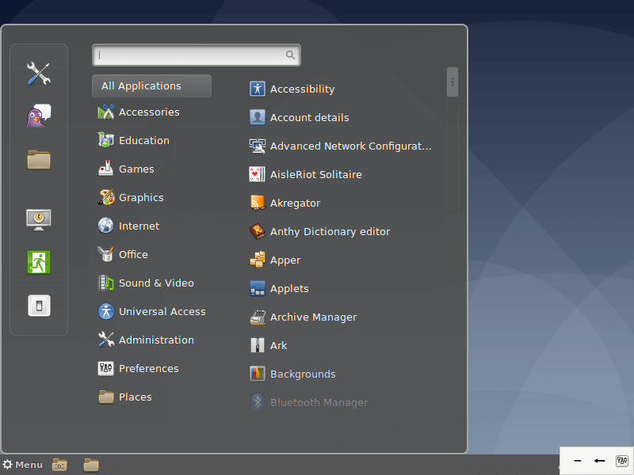

windows 1

>O Windows 1.0 (1982-1985) ...
O Windows 1.0 trouxe uma interface com cores vibrantes ao usuário, porém somente possível sua reprodução em monitores com cores, pouco comuns à época de seu lançamento.
windows 2

Dois anos depois da estreia no mercado de sistemas operacionais, a Microsoft resolveu fazer o lançamento do Windows 2 em dezembro de 1987. A grande inovação desse software era a possibilidade de as janelas sobreporem umas às outras, funcionalidade que parece piada nos dias de hoje.
windows3
Lançado em 1990, esse foi o primeiro SO da Microsoft a exigir um disco rígido para ser instalado. Também foi aquele que despertou a atenção do mercado para o nome “Windows”, colocando-o de vez na disputa pela popularidade.
windows 3.1
Apesar de os Windows 1 e 2 também terem versões derivadas com um “ponto”, foi o Windows 3.1 que precisou ser separado do 3 por causa de suas atualizações significativas. A principal delas foi a introdução da fonte TrueType, transformando o SO, pela primeira vez, em uma plataforma de publicação.
windows 95
Como o nome sugere, esse SO da Microsoft foi lançado no ano de 1995 e trouxe, pela primeira vez, o Menu Iniciar e a Barra de Ferramentas tão familiares para todos nós. O Windows 95 também inaugurou o conceito de “plug and play”, facilitando bastante a vida de quem precisasse utilizar um periférico diferente.
windows 98
Lançado em 1998, o Windows 98 foi construído sobre a versão anterior e trouxe uma série de novidades. Entre elas estão o IE 4, o Outlook Express, o Windows Address Book, o Microsoft Chat e o NetShow Play, que posteriormente seria substituído pelo Windows Media Player. Com exceção do IE, do Outlook e do WMP, todas as outras ferramentas já foram aposentadas ou substituídas
windows ME
O Windows Millennium Edition foi a última versão do SO baseada no MS-DOS e considerada por muitos como a pior de todas. Ela foi lançada em 2000 e teve uma variante que foi especialmente desenvolvida para equipar servidores, o Windows 2000.
windows XP
Alguns argumentam que esta seja a melhor versão do sistema operacional da Microsoft. Ela foi lançada em outubro de 2001 e foi a que mais durou no mercado, recebendo suporte até o mês de abril de 2014 — 13 anos após a sua estreia no segmento.
Windows Visita
Ao contrário do seu antecessor, o Windows Vista recebeu duras críticas dos consumidores que tiveram a infelicidade de utilizá-lo. O sistema apresentava uma série de problemas e funcionalidades mal-implementadas, sendo que uma das principais reclamações foi referente ao UAC ou User Account Control ("Controle de Contas do Usuário").
Distribuição de Linux
Linux Ubuntu

Desenvolvido por uma empresa chamada Canonical, o Ubuntu é baseado em um dos muitos derivados do Linux Debian. Esse software chegou ao mercado em 2004. As pessoas programadoras na época perceberam os destaques do sistema e sua facilidade na programação. A interface de linha de comando permitia que fosse usada uma sintaxe mínima para escrever programas. O Ubuntu tem três versões, todas desenvolvidas para diferentes propósitos.
linux Deepin

Deepin é uma distribuição baseada em Debian (era baseada em Ubuntu até a versão 15 lançada no final de 2015) que tem como objetivo fornecer uma interface elegante, confiável e amigável.
Kali Linux

Offensive Security é a empresa responsável pelo Kali Linux. Ele por si só é uma distro Linux baseada em Debian. Foi projetado para ajudar principalmente profissionais da área de segurança com seus inúmeros testes.
Majaro Linux

Manjaro Linux é um sistema operacional rápido, amigável e voltado para desktop baseado no Arch Linux.
Linux Debian

Debian é a distribuição mais antiga e mais popular do Linux. Como qualquer outro distro de peso, fornece uma ambientação muito agradável e rápida. Atualmente, sua última versão é a 11, que também é chamada de Bullseye.
Pupy Linux
Puppy Linux é mais uma distribuição Linux. A diferença aqui é que o Puppy é extraordinariamente pequeno, mas cheio de recursos. O Puppy inicializa em um ramdisk e, ao contrário das distribuições de live CD que tem que extrair coisas do CD, ele carrega na RAM. Isso significa que todos os aplicativos começam em um piscar de olhos e respondem à entrada instantaneamente.
Linux OpenSUSE

O OpenSUSE é mais uma das distribuições Linux que tem como objetivo fornecer uma interface moderna e rápida para pessoas usuárias de desktop e desenvolvedoras de todo mundo.
Linux Lite
Linux Lite é uma distribuição Linux amigável para iniciantes baseada no lançamento de suporte de longo prazo (LTS) do Ubuntu e utilizando o desktop XFCE.
Linux CentOS
O Linux CentOS é mais um sistema operacional gratuito que tem como objetivo criar um ecossistema de código aberto confiável. Ele é baseado no RHEL, e é uma das alternativas do Red Hat Enterprise Linux por ser gratuito.
Arch Linux

Arch Linux é a distribuição que foi projetada para pessoas usuárias avançadas ou especialistas em Linux. Sendo possível configurar e personalizar o sistema da maneira que a pessoa usuária quiser. Podemos dizer também que o Arch é voltado para pessoas que gostam de ter controle sobre o seu sistema operacional.
Linux Zorin OS

Zorin OS é uma distribuição Linux baseada no Ubuntu projetada especialmente para iniciantes no Linux. Possui uma interface gráfica de usuário semelhante ao Windows e muitos programas semelhantes aos encontrados no Windows.